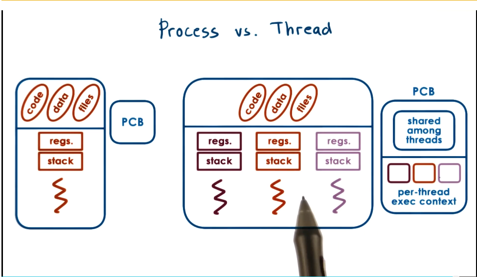
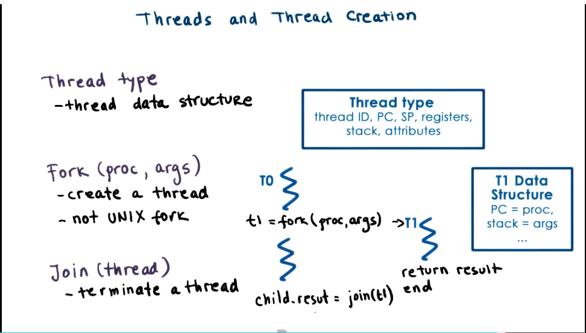
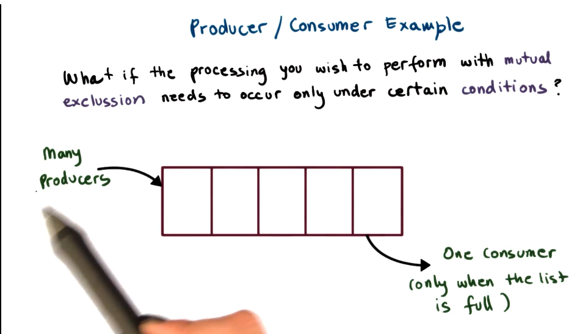
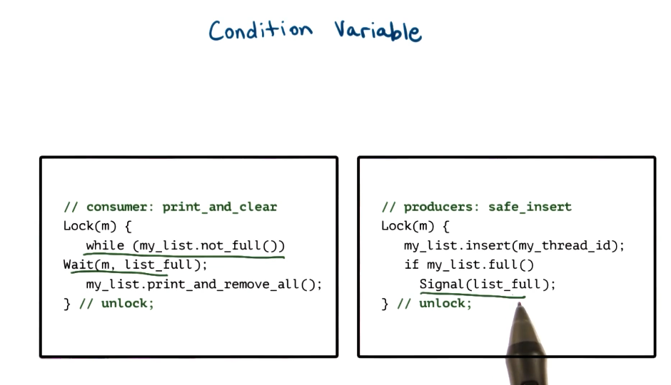
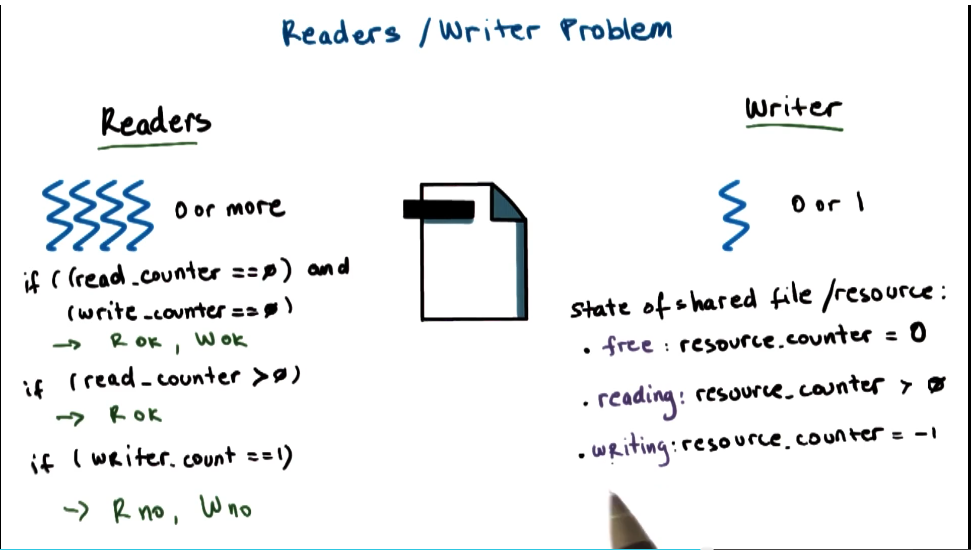
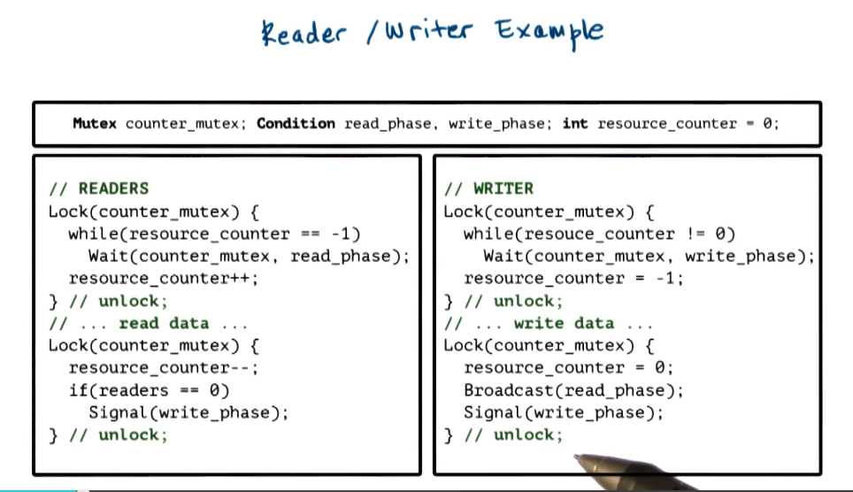
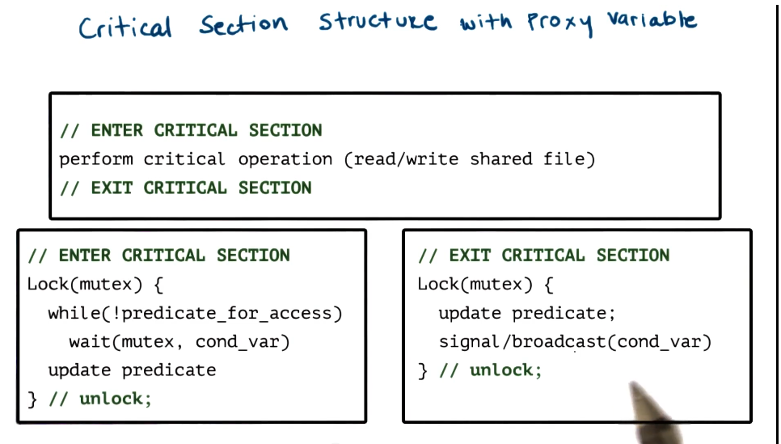

GIOS Lecture Notes - Part 2 Lesson 2 - Threads and Concurrency
Why threads?
Multiple processes from last lecture can still only happen on one CPU at a time. To take advantgage of multiple CPUs we need multiple execution contexts. This is usually done with threads.
Visual Metaphor for Threads
Again this toy shop comparison. This time the workers in the shop.
- Active
- Works simultaneously
- Requires coordination
Process vs Thread
- A single threaded process is represented by its address space
- Also by its execution context. Represented in a PCB
- Multiple threads all share the same address space, code, data, and files. However, each execute different instructions and operate on different parts of space
- As a solution to this, a more complex PCB structure is needed. It will keep track of both the shared information and the per-thread execution context 
Benefits of Multithreading
Why are threads useful?
- At any given time, there may be multiple threads each running on a different processor
- One potential application is that you can have many threads executing the same operation on a different input structure
- This parallelization grants faster overall runtime
- Alternatively, you may have threads execute different portions of the code that correspond to different functions
- Specialization allows differentiation of how we manage the functions
- Hot cache
- Specialization allows differentiation of how we manage the functions
- Threading has much lighter memory requirements, as it does not need separate allocations for address space information and execution contexts for each thread while multiprocessing does.
- Passing data among processes requires IPC between address spaces. Much harder than threads.
Benefits of Multithreading: Single CPU
- Are threads useful when #threads > #cpus
- Yes, take advantage if IO or other idle time
- Any time the idle is longer than 2x time of context switch you could be working another thread
- Notably context switches are much lighter for threads than processes
- This is known as “hiding latency”
Basic Thread Mechanisms
- Thread data structure
- Identify threads, keep track of resource usage
- Mechanisms to create and manage threads
- Mechanisms to safely coordinate among threads running concurrently in the same address space
- You can get data races or other issues when threads try to all access the same data concurrently
- Concurrency control and coordination
- Mutual exclusion
- Exclusive access to only one thread at a time
- mutex - a synchronization mechanism
- Waiting on other threads
- specific condition before proceeding
- Condition variables - a synchronization mechanism
- Waking up other threads from wait state
- Mutual exclusion
Threads and Thread Creation
THIS SECTION BASED ON BIRRELL PAPER, NOT PTHREADS LIBRARY
- Thread type
- thread data structure
- contains all thread info to describe the thread
- Fork (proc, args)
- create a thread
- not UNIX fork()
- Need some mechanism to determine when forked thread is done, and retrieve its result
- Join (thread)
- terminate a thread
- returns to parent the result of the child’s executrion 
Mutexes
- Mutal Exclusion
- A lock that should be used whenever accessing data or state that’s shared among threads
- To support this function, need a data structure for a mutes
- Locked?
- Owner
- blocked_threads
- Portion of code protected by the mutex is called the “critical sectioon”
Producer / Consumer Example
- What if the processing you wish to perform with mutex needs to occur only under certain conditions? 
Condition Variables

- Condition type
- Wait(mutex. cond)
- mutex automatically released & re-aquired on wait
- Signal(cond)
- notify only one thread waiting on condition
- Broadcast(cond)
- notify all waiting threads
- worth noting that in this case there’s still a mutex to be acquired, only one thread woken will get it. Use case for Broadcast() is somewhat complicated as a result
- Condition Variable Data Structure
- mutex ref
- waiting threads
Readers/Writer Problem
  
Common Pitfalls
Avoiding common mistakes
- Keep track of mutex/condvariables used with a aresource
- e.g. mutex_type m1; //mutex for file
- Check that you are always (and correctly) using lock and unlock
- common mistake is to forget this in one of many places where a given piece of state is accessed
- e.g. did you forget to lock/unlock compiler errors
- Use a single mutex to access a single resource
- Check that you are signaling correct condition
- Check that you are not using signal when broadcast is needed
- signal: only 1 thread will proceed, remaining threads will continue to wait, possibly indefinitely
- Ask yourself: do you need priority guarantees?
- thred execution order not controlled by signals to condition variable
- Spurious wake ups
- Doesn’t necessarily affect correctness, but will affect performance
- When we wake threads up knowing they may not be able to proceed
- Can we unlock the mutex before broadcast/signal?
- Yes! Sometimes…
- But you need to be very careful about ordering and atomicity
- Deadlocks
- Two or more competing threads are waiting on each other to complete, but none of them ever do
- How to avoid?
- Fine-grained locking
- Get all locks upfront then release at end
- Use one mega lock
- Too restrictive, often
- Maintain lock order!
- Hierarchical locking. This is generally better than above solutions
- In practice this can be very complicated on more complex systems
- In summary
- A cycle in the wait graph is necessary and sufficient for a deadlock to occur
- Edges from thread waiting on a resource to thread owning a source
- What can we do about it?
- Deadlock prevention
- Hierarchical locking
- EXPENSIVE
- Deadlock detection and recovery
- Based on graph analysis
- ROLLBACK - still expensive because you need to maintain enough state to recover
- Recovery may not always be possible
- Ostrich Algorithm
- Head in the sand yo
- Reboot if it stops working
- Obviously not a great idea
- Deadlock prevention
- A cycle in the wait graph is necessary and sufficient for a deadlock to occur
Kernel vs User Level Threads
- Kernel level threads imply that the OS itself is multi-threaded
- OS scheduler handles how kernel level threads will work
One to One Model
- Each user level thread has a kernel level thread associated with it
- Pros
- OS sees and understands the threads, synchronization, blocker, etc
- User level processes directly benefit from threading in kernel
- Cons
- Must go to OS for all operations (may be expensive)
- OS may have limits on policies, thread number, etc
- Portability
Many to One Model
- All user level threads are mapped onto single kernel level thread
- At user level there is a thread management library that decides which user level thread will be mapped onto the kernel level thread at any given time
- Pros
- Totally portable
- Doesn’t depend on OS limits and policies
- Don’t have to make system calls or context switches, less overhead
- Cons
- OS has no insights into application needs
- OS may block entire process if one user-level thread blocks on I/O
Many to Many Model
- Allows some user threads to be associated with one kernel level process, while others may be one to one
- Pros
- Can be best of both worlds
- Can have bound or unbound threads
- Cons
- Requires coordination between user and kernel level thread managers
Scope of Multithreading
- Different levels at which multithreading is supported
- System scope
- system-wide thread management by OS-level thread managegers (e.g. CPU scheduler)
- Process scope
- User level library manages threads within a single process
Multithreading Patterns
Boss-workers
- Characterized by one boss thread and multiple worker threads
- Boss assigns work to workers
- Worker performs entire task
- Throughput of the system limited by boss thread. Must keep boss thread efficient
- Throughput = 1/(boss time per order)
- How does boss pass work?
- One way is for boss to keep track of which workers are free, and directly signal specific worker
- Pros
- Workers don’t need to synchronize
- Cons
- Boss must track what each worker is doing
- Boss must wait on targeted worker
- Throughput will go down
- Pros
- Another option is for boss to assign work by placing work in producer/consumer queue that workers take from
- Pros
- Boss doesn’t need to know details about workers
- Boss doesn’t need to wait on workers
- Better throughput
- Cons
- Queue synchronization
- This approach tends to be picked
- If queue is full, boss has to wait to add stuff to it. More workers to pull from it will empty queue faster
- How many workers is optimal?
- On demand, dynamically?
- Statically?
- More commonly, keep a pool of workers created up front
- Static vs dynamic
- Increase pool in size of some conditions are met
- Pros
- One way is for boss to keep track of which workers are free, and directly signal specific worker
- Pros
- Simplicity
- Cons
- thread pool management
- ignores locality
- boss doesn’t keep track of workers.
- If a worker just finished a specific task, more likely to be efficient to do it again. State is loaded already. You leave that potential optimization on the table here.
- An alternative to all workers performing all same task, you can have workers specialized for certain tasks
- Boss would now need to classify tasks, and assign to correct type of worker. This creates bottleneck overhead, but my be offset by worker efficiency gains
- better locality - because a worker does only a subset of tasks, more likely to have the needed state already loaded in cache
- Quality of Service management - can better prioritize specific tasks
- Downside is the overhead of more complex load balancing
Pipeline
- Threads assigned one subtask in the system
- Entire tasks == pipeline of threads
- Multiple tasks concurrently in the system, in different pipeline stages
- Throughput == weakest link (longest stage in the pipeline)
- Each pipeline stage has its own thread pool
- Shared-buffer based communication betweeen stages
- Pros
- Allows for highly specialized threads, great locality
- Cons
- Balancing and synchronization overheads
Layered
- Each layer is assigned a group of related subtasks
- End to end task must pass up and down through all layers
- Pros
- Specialization and locality
- Less fine-grained than pipeline
- Cons
- Not suitable for all applications
- Synchronization
Throughput Quiz
Boss-Worker Formula: time_to_finish_1_order * ceiling (num_orders / num_concurrent_threads)
Pipeline Formula: time_to_finish_first_order + (remaining_orders * time_to_finish_last_stage)